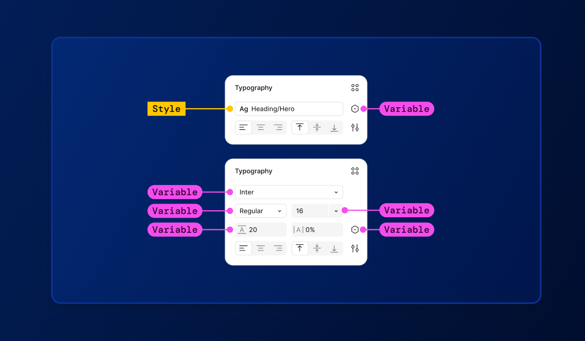

Styles vs Variables
Styles and variables are key to our, and any, design system. By defining reusable tokens, we ensure that design decisions are intentional, cohesive, and easy to adapt across platforms and themes.
Styles
Styles can be used with or without variables, as a way to create repeatable: color fills, gradients, typography presets, effects, layout grids, and strokes.
Variables
Variables can used in more fields than a style, and provide the benefit of modes for managing stylistic variations of a single property or value (e.g. light mode
and dark mode): color fills, gradients, typography, effects, layout grids, corner radius, component properties, text strings, strokes, widths and heights, and auto layout properties.
Learn More
Watch Figma Video

Our labeling technique
We use inline classing in HTML and CSS so it is an easier way to maintain, customize, and adapt across components without duplicating code or breaking consistency.
These classes are grabbed from our Figma variables shown below. Each class is correlates to a specific scenario so there is not overclassing.